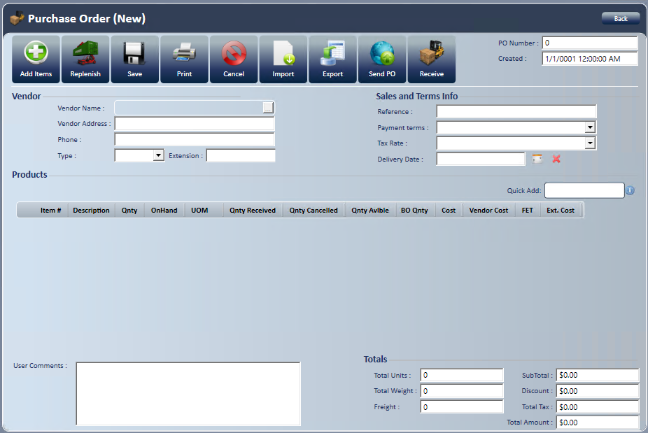
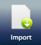
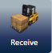
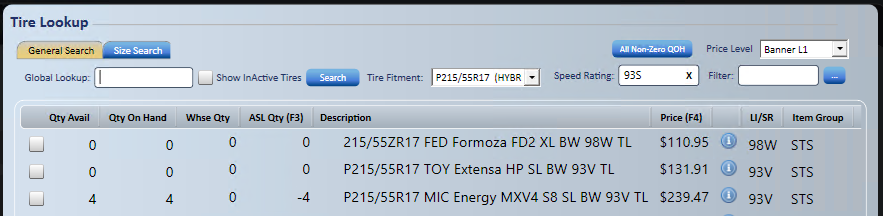
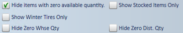
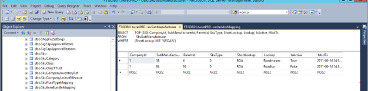
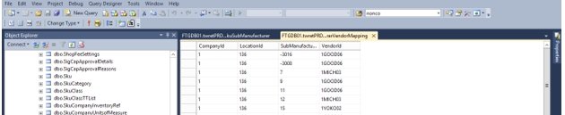

Purchase Order
Use a purchase order to place a stocking order, or any order that isn't for a service request you already created.
Note: To send a purchase order electronically to a vendor, see Vendor Ordering. To enter the vendor's bill or a credit, see AP Invoices and Vendor Credits.
Create a purchase order
- Go to New; Purchase Order, or select on the Purchases tab of the Home page.

- Choose the vendor in the Select Vendor window, which opens as soon as the new purchase order opens.
- To find a vendor, enter search criteria in Look For.
- If the vendor isn't in the list, check .
- Highlight the vendor.
- Select Done.
- Known vendor information fills in automatically.
- Enter the Reference.
- If the same reference number was already used on another purchase order for this vendor, you're warned. With the Inventory Receipt - Allow Duplicate Reference Numbers access right, you can choose to keep it. Without it, enter a different reference number.
- If the vendor has ordering requirements, the Vendor Requirements window opens. Fill in the values.
- To reopen it later, select the blue i (Open Vendor Requirements) next to Delivery Date.
- To set a delivery date, select the calendar and choose the month and date.
- To remove the date, select .
- Select Add Items . The tire lookup screen (F1) opens automatically, and you can switch to General Search (F3) if needed.
- If you don't know the SKU, search for the product. For search fields and filters, see Search fields and filters below.
- If you know the manufacturer SKU, add the item with .
- Enter the manufacturer item number and quantity, such as 254260,10, and press Enter. The line fills in automatically.
- Use a comma as the delimiter, with no spaces.
- Check the box to the left of the item in the search results, or double-click the line.
- Enter the quantity.
- Verify the Unit of Measure.
- Verify or change the cost.
- The PO cost defaults from the default selected in company setup.
- Verify the FET, if it applies, and change it if needed.
- Select Done.
- Repeat these steps until you've added all items.
- Select X in the search box to return to the purchase order.
- Select Save .
- The next sequential purchase order number is assigned.
- Select Back to return to the Home screen.
- The purchase order shows on the Purchases tab with an Open status.
Other purchase order actions
- Freight: Enter a freight amount in Totals if needed. Requires the Purchase Order - Edit Freight Amount access right.
- Send PO: For vendors set up for electronic ordering, TireWorks HD checks availability with the vendor first. Each line shows a green check (fully available), a yellow warning (partly available) or a red icon (not available).
- Select Cancel to go back to the purchase order. Availability shows on each line and costs are updated.
- Select Continue to send the order. Unavailable lines are removed, partly available lines are reduced to the available quantity, and the vendor's cost is used where the vendor returned one.
- For vendor setup, see Vendor Ordering.
- Close: On a partly received purchase order, select Close when the rest isn't coming. Quantities change to match what was received, unreceived items are removed, and the purchase order becomes Fully Received.
- Close is also on the Purchases tab and in Find; Purchase Order.
- Requires the Purchase Orders - Close PO access right. For a purchase order linked to a service request, see Additional Features & Functionality under Creating Service Request.
Important: Closing a purchase order can't be undone.
Replenish a purchase order
Use Replenish to add items for the selected vendor based on the min/max data set up in inventory management.
- Select the vendor.
- Enter the reference information.
- Select Replenish.
- Line items fill in based on the min/max data and are flagged as auto generated.
- Add more line items manually if you want.
- Select Save when you're done.
Import items from a spreadsheet
Use Import to add items to a purchase order from an Excel spreadsheet.

- Select Import.
- Select and choose the file.
- Select the worksheet from the dropdown.
- In Sku, select the column header from your spreadsheet.
- You must use the universal SKU.
- In Quantity, select the column header from your spreadsheet.
- In Cost, select the column header from your spreadsheet.
- A preview displays.
- After you verify the preview, select .
Export a purchase order
Use Export to export the information on the purchase order to an Excel spreadsheet.
Receive a purchase order
Use Receive to receive directly from the purchase order.

- Select Receive.
- An inventory receipt opens automatically, with the comment "Created through PO Number:" and the PO number.
- Complete the receipt. See Inventory Receipt.

Search fields and filters
- Global Lookup: Searches by the three-segment universal SKU.
- Segment 1: Simple tire size, with no dashes, slashes or letters.
- Segment 2: Manufacturer code, generally the first three characters of the manufacturer.
- Segment 3: Manufacturer item number.
- Show Inactive Tires: Search results show all tires, whether active or inactive.
- Tire Fitment: Defaults to the tire fitment selected for the vehicle. You can choose other fitments.
- Speed Rating: Defaults based on the tire fitment.
- Price Level: Defaults to the store default, or to the account default for an A/R customer.
- Filter: Narrows the search by any part of the description.
- Advanced Filter : Applies additional filters based on the inventory tree structure.
- Quantity Available: Total quantity on hand minus committed quantity.
- Warehouse Quantity: Warehouse quantities, distributor quantities and price, or both.
- If there are multiple warehouses, you can set it to show only the default servicing warehouse.
- ASL Quantity: Quantity and price held at all your other stores.
- Price: The customer's price, set by the store's default price level or the A/R account price level, plus any additional price rules.
- Tire Detail : Specs, picture, features, comps and warranty information.
- Available only for tires that are in TDC (Tire Data Central). TDC is a database of over 105,000 tires.
- Additional Search Filtering: Adds more filters to narrow the search results further.

- Filtering by Item Group: See the Item Group setup and item assignment procedures.
Vendor Replenishment
Set up vendor replenishment so that Replenish on a purchase order brings in items that need reordering, based on min/max reorder points, the vendor selected, and the submanufacturers defined for that vendor.
Note: Each vendor must be mapped to the submanufacturers (brands) it supplies, at each store.
- Go to Manage; Company Setup; Vendors.
- Highlight the vendor.
- You must save a new vendor first.
- Select Map SubMfrs For Replenish.
- Vendor SubManufacturer Mapping for Replenishment opens for the store you're logged into.
- Check each submanufacturer the vendor supplies.
Note: Brands under one manufacturer are separate submanufacturers. For Michelin, for example, check Michelin, BFGoodrich and Uniroyal.
- Select Done.
- If you have multiple stores, log into each store and repeat these steps, or select Copy SubManufacturers Mapping to copy this store's mapping to other stores.
Important: Copying replaces the existing mapping for this vendor at the stores you select.
- Max Items: Enter the maximum number of items allowed on one purchase order for the vendor, if the vendor has a limit. Leave it blank for no limit.
Schedule replenishment purchase orders
- Go to Manage; Location Setup; Locations.
- Select the Auto-Replenishment tab, then the Vendors tab.
- Select a vendor and add a Replenishment Schedule.
Test replenishment
After setup, test replenishment in the application.
- Open a purchase order for the vendor and select Replenish.
- Make sure items with reorder points display as expected.
Note: Quantities already on open purchase orders are subtracted from the amount added.

